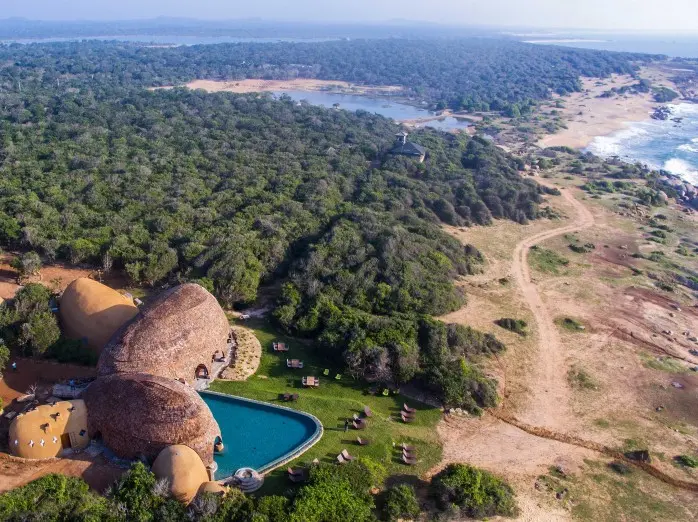

Yala National Park

Yala National Park is the most visited and second largest national park in Sri Lanka, bordering the Indian Ocean. The park consists of five blocks, two of which are now open to the public, and also adjoining parks. The blocks have individual names such as, Ruhuna National Park, and Kumana National Park or 'Yala East' for the adjoining area. It is situated in the southeast region of the country, and lies in Southern Province and Uva Province. The park covers 979 square kilometres (378 sq mi) and is located about 300 kilometres (190 mi) from Colombo. Yala was designated as a wildlife sanctuary in 1900, and, along with Wilpattu was one of the first two national parks in Sri Lanka, having been designated in 1938. The park is best known for its variety of wild animals. It is important for the conservation of Sri Lankan elephants, Sri Lankan leopards and aquatic birds.